Gutter Cleaning
Remove leaves, debris, and buildup that can cause overflowing gutters and clogged downspouts. We will get the system flowing properly and can identify problems that may need attention.
Gutter care, start to finish
From a seasonal cleanout to a complete installation. Choose a service and tell us what’s happening.
From the field
A look at the work, from cleanouts to copper downspouts.
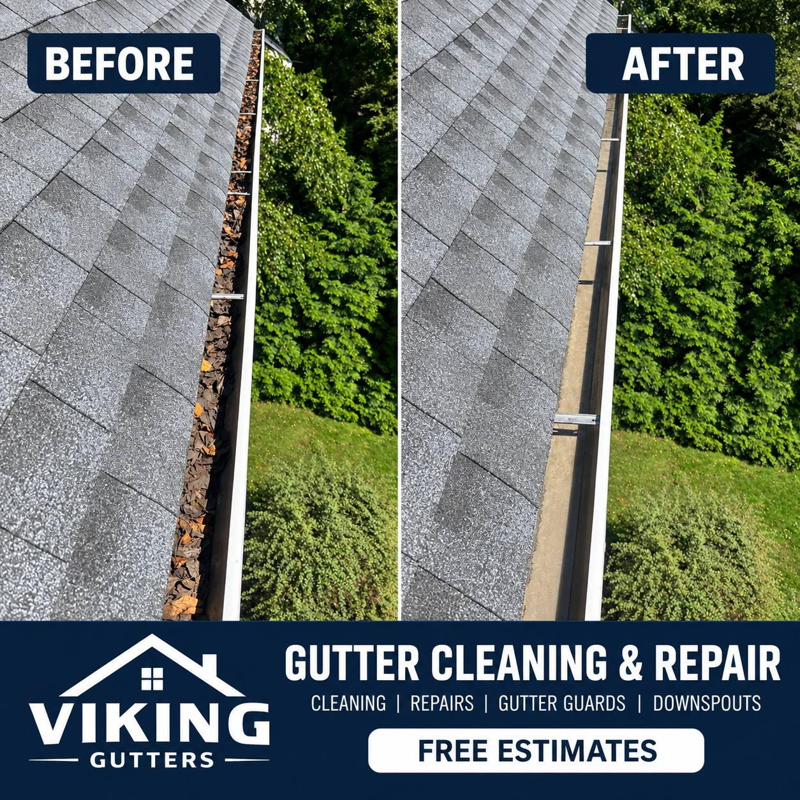
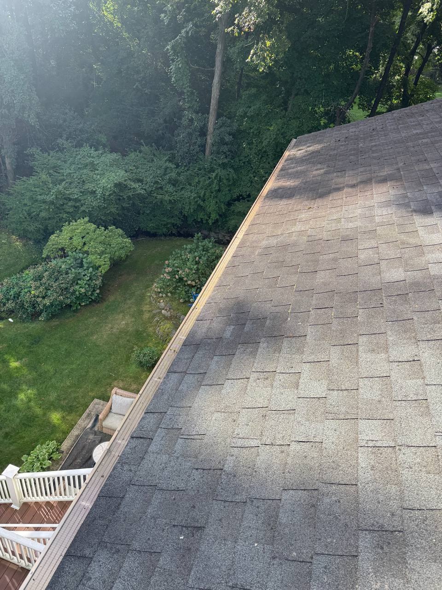
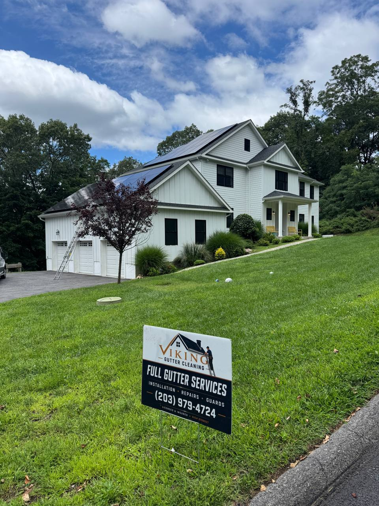
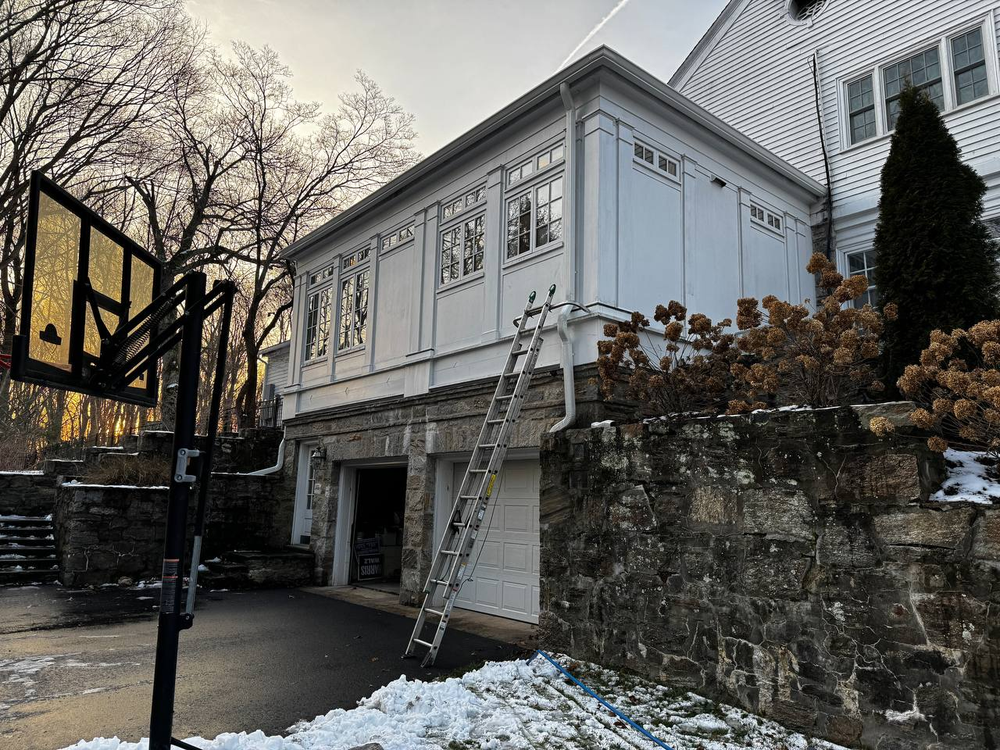
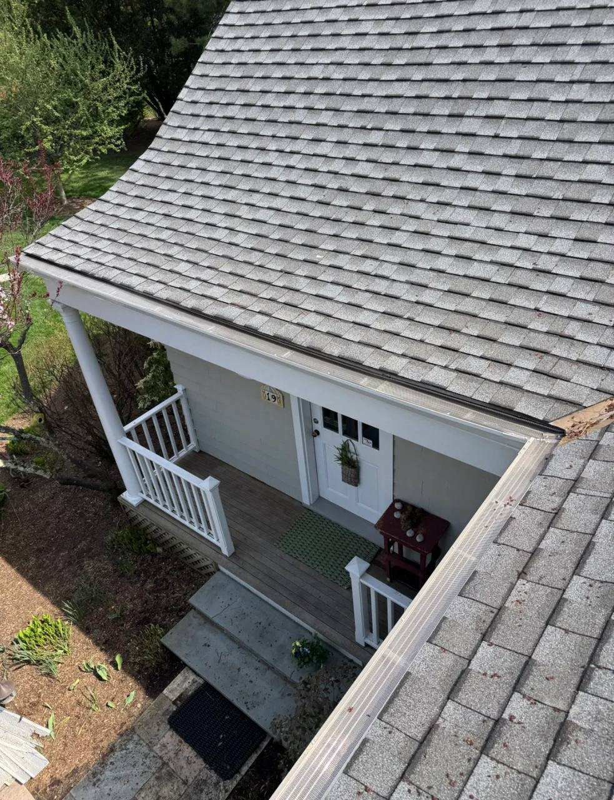
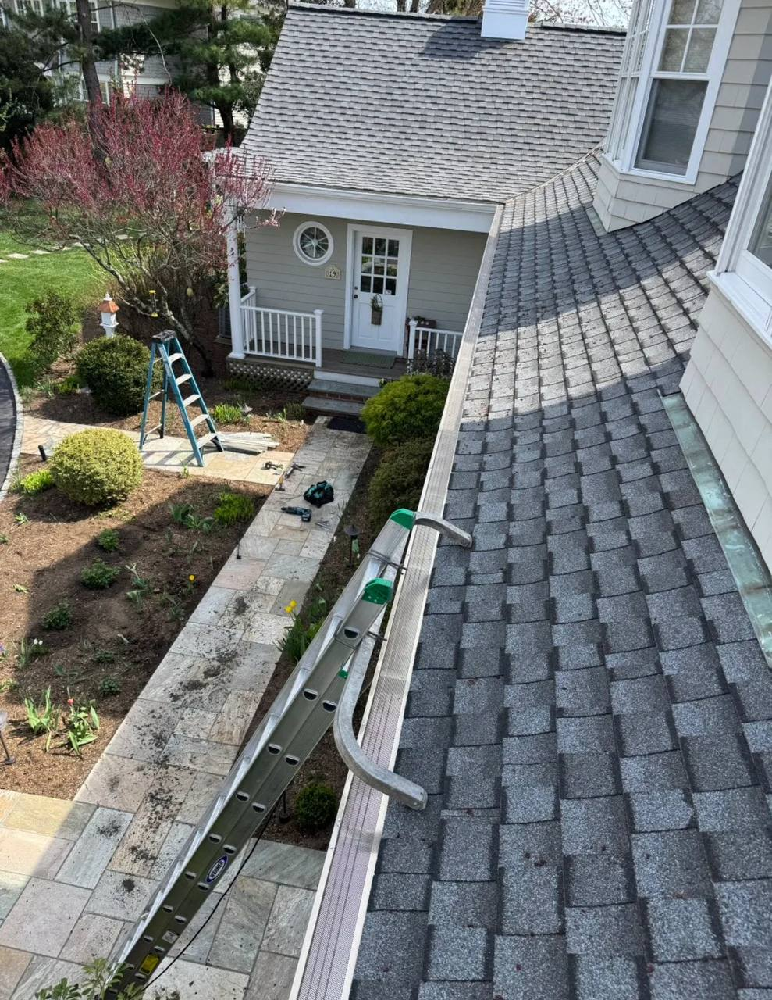
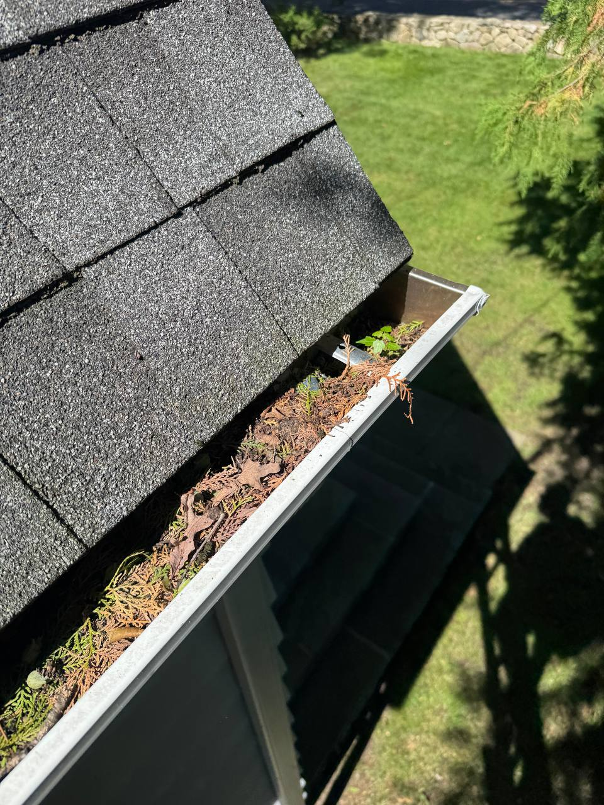
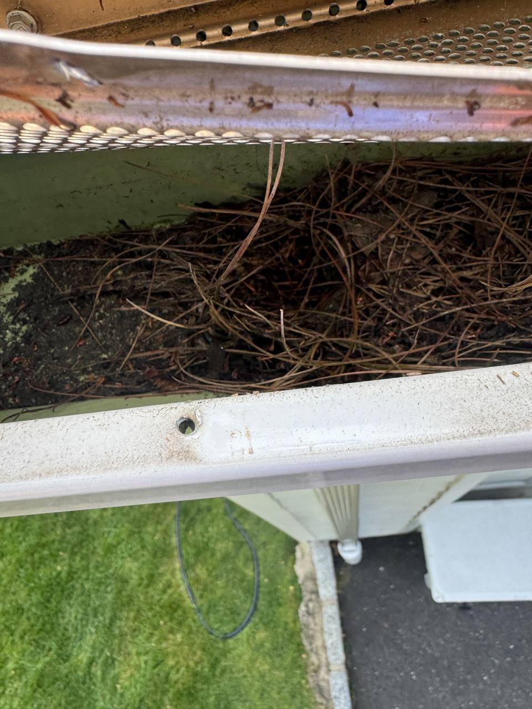
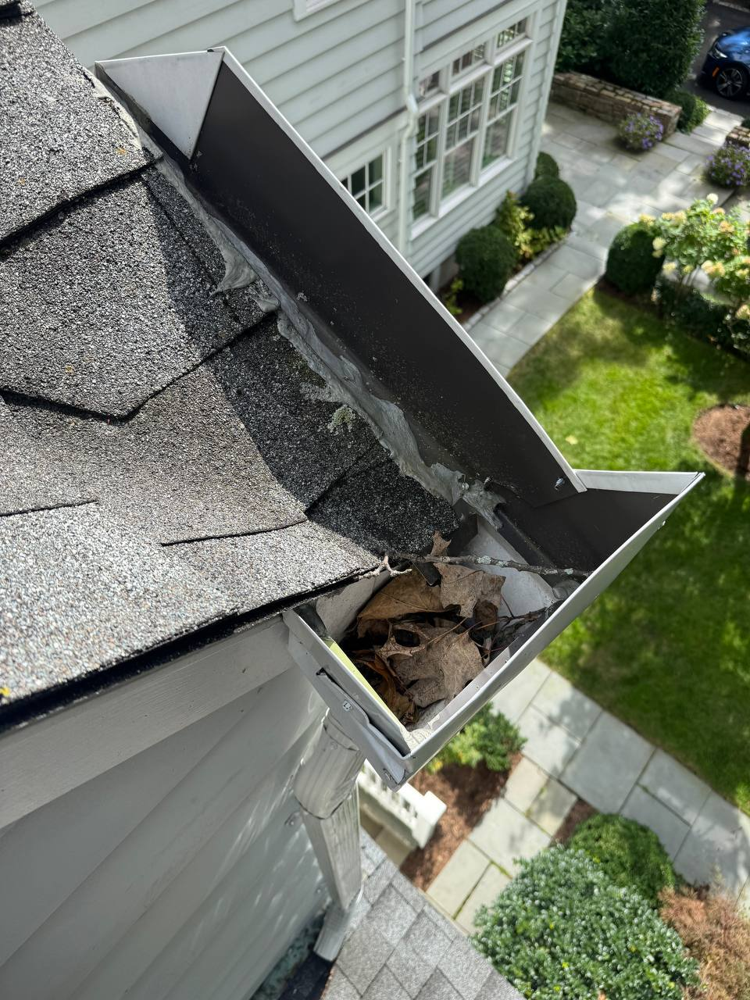
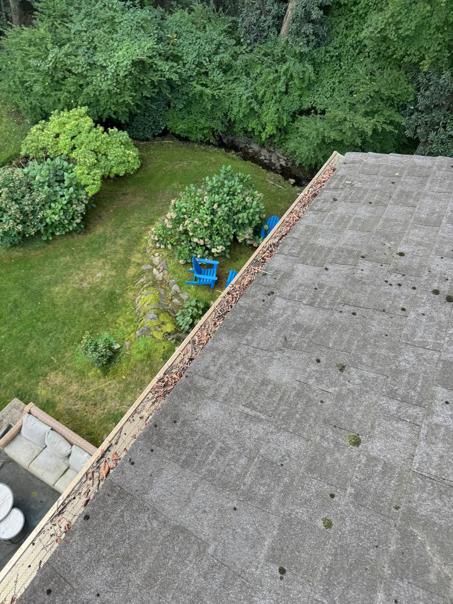
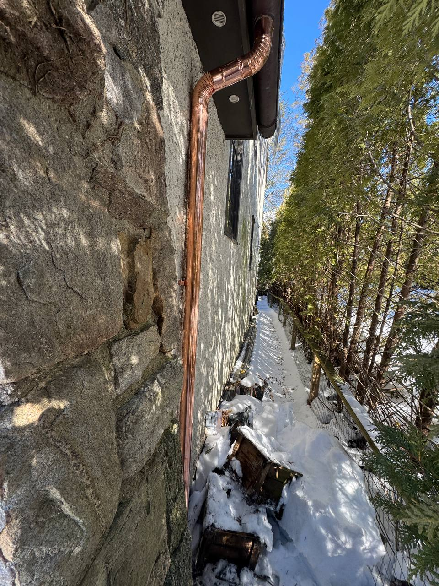
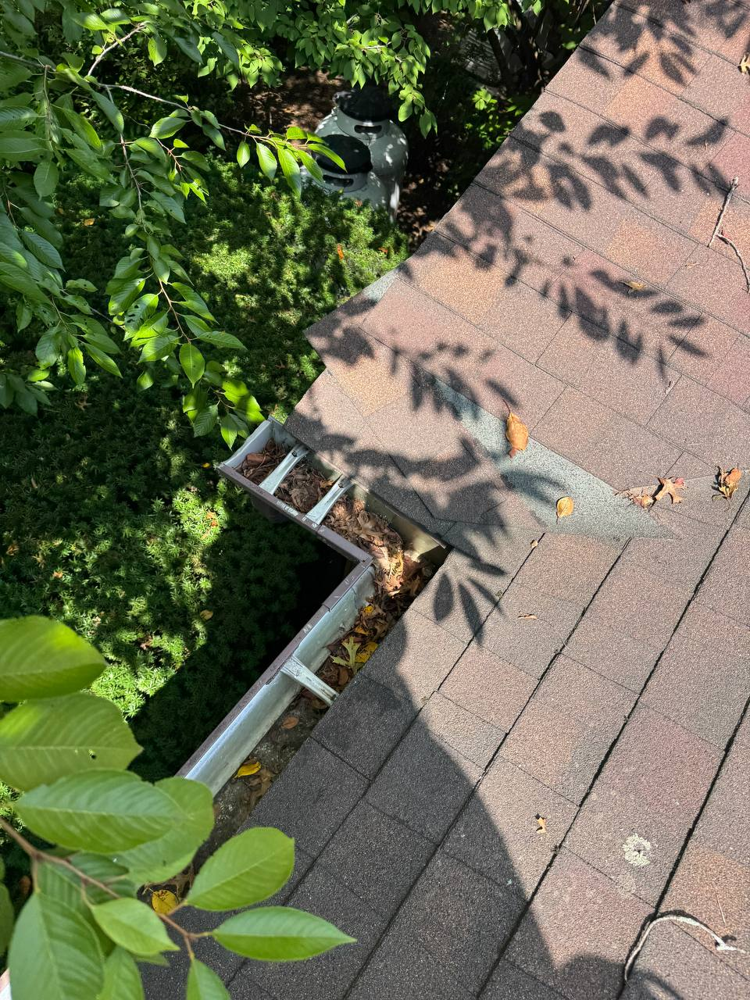
The right service for your home
Routine maintenance, a specific repair, or a fresh start. We help you find the right next step.
Remove leaves, debris, and buildup that can cause overflowing gutters and clogged downspouts. We will get the system flowing properly and can identify problems that may need attention.
Leaks, loose gutters, damaged sections, improper pitch, failing seams, and drainage problems do not always require full replacement. We will evaluate the issue and repair the existing system when practical.
When it is time for new gutters, Viking provides complete gutter installation designed to properly collect and move water away from your home.
Reduce debris buildup and routine maintenance with professionally installed gutter protection. We will help determine whether gutter guards are a good fit for your home and existing gutter system.
A straightforward approach
Leaks, loose sections, and drainage problems don’t always call for new gutters. We evaluate the condition of your system and explain what can be repaired—and when replacement makes sense.
Tell us about the problemShare your location and what you’ve noticed.
We evaluate the gutters and discuss the options.
Schedule the service your home needs.
Let’s get started
Tell us a little about your property. We’ll help determine the right next step.
(203) 979-4724service@vikingconstructionct.comServing Fairfield County
and surrounding areas.
A few helpful answers
No. Despite the Viking Gutter Cleaning name, we provide full gutter services including cleaning, repairs, gutter guards, and complete gutter installation.
In many cases, yes. Problems such as leaks, loose sections, poor pitch, clogged outlets, or isolated damage may be repairable. We will evaluate the existing system and explain your options before recommending a complete replacement.
It depends on the property, surrounding trees, roof design, and whether gutter guards are installed. Many homes benefit from cleaning at least once or twice per year, while heavily wooded properties may require more frequent service.
Yes. Viking installs gutter protection systems and can evaluate your existing gutters to determine whether guards are appropriate and whether any cleaning or repairs should be completed first.